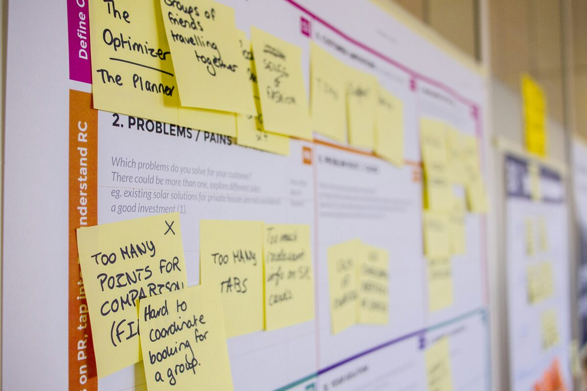

Ongoing Management
Focus on your growth. We’ll do the rest.
Explore our insights or view our paid packages.

Our approach
The sprint is over. The marathon starts.
Once you’ve been through a full cycle — first PO to first SO — everything you assumed at the start needs revalidating. The business plan gets recalibrated against what actually happened, suppliers get re-evaluated against their performance, and the setups get buckled down and toned up. If it all holds up, the game is on.
At this stage your attention belongs on the top line: new products, new channels, new customers. You also need the organizational foundation set correctly — able to run as a solo operation today and ready to take on people tomorrow. What you don’t need is the back office quietly eating your time and energy. That’s where we come in.
Painpoints & the solves
- Administrative work eating the hours that should go to growth
- No clear read on when to hire and when to keep flying solo
- Growth outrunning the cash — aggressive top line, tight cashflow
- A setup that’s either messy or too simple to carry the next stage
- All-in back office: resupply, logistics, P&L, cashflow — visibility and a control tower
- Data-driven process and system improvement, continuously
- An online dashboard for your business
- Hiring and training your staff when a function is ready to come in-house
Why us
What separates a startup owner from a billion-dollar company isn’t the first step or the last one. It’s the ninety-nine in between — and every one of them has to be right. Fast and nimble, but solid.
Our consultants were trained inside large companies to run cross-functional projects and oversight — the discipline that makes each step solid enough to jump from. And having run small businesses ourselves, we’re cost-sensitive in a way big-company thinking usually isn’t.
The division of labor is clear. You make the decisions and you make the payments. We surface the opportunities and the risks through data, and we manage the execution.
We design and implement those steps one at a time, until you’re ready to take them over. That’s the goal — not to keep you dependent, but to hand each function across when your team is ready for it.
You control the business. We keep the engine room running.
How we engage
- Free discovery call
we learn what’s eating your time and where the gaps are
- Scope the back office
which functions we take, which stay with you — agreed explicitly
- Build the control tower
systems connected, dashboard live, visibility on material flow and cash flow
- Run the operation
day-to-day execution, with risks and decisions surfaced to you
- Hand it back
as you grow, we help you hire, train, and insource — and step back to oversight
Frequently asked questions
- How do you coordinate with external service providers?
- Think of us as your COO on call. We agree the boundaries of how we can represent you, then handle the day-to-day directly with them. Anything significant comes to you for approval, and we execute once you’ve decided.
- How do you handle customer service in my brand voice?
- At the start, we’d actually suggest you handle customer service yourself — early on it’s too close to your success to hand over. If and when you do want help, we build brand voice and response guidelines with you first, and operate strictly inside them. Anything outside the guidelines comes back to you before we respond.
- Why are order management and fulfillment always bundled?
- They’re two halves of one process. An order that isn’t tracked through to fulfillment creates blind spots — you don’t find out something went wrong until a customer tells you. We run both together so there’s one accountable party for the whole order-to-delivery cycle.
- What happens as I grow and want to bring things in-house?
- We actively support it. When you’re ready to insource a function, we help write the job description, define the handoff, and train your hire using the processes we built together. The institutional knowledge transfers with the role rather than walking out the door.
Ready for ongoing support?
Start with a free discovery call or send us your question — we’ll take it from there.